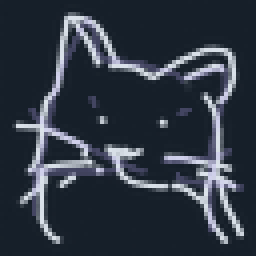

1 Guidance as a vector field
The data is a mixture of six Gaussians: photo cats, pencil cats, and one ambiguous blob. Noising a Gaussian mixture gives another Gaussian mixture, so every field below is exact. Hover a particle to trace it, or click to pin it and press play.
Pencil fraction vs. guidance scale
What you are seeing
$$\nabla\log p_t(x\mid c)=\underbrace{\nabla\log p_t(x)}_{\text{base}}+\underbrace{\nabla\log p_t(c\mid x)}_{\text{guidance }g_t}$$Particles follow $\nabla\log p_t(x)+s\,g_t$, which targets $p(x)\,p(c\mid x)^s$.
CG differentiates a classifier, $g_t=\nabla\log p_t(c\mid x)$. CFG subtracts two scores, $g_t=\nabla\log p_t(x\mid c)-\nabla\log p_t(x)$. With exact models they give the same field.
TFG applies a loss to the clean prediction $\hat x_0=\mathbb E[x_0\mid x_t]$ and differentiates through it: $$g_t=-\Big(\tfrac{\partial\hat x_0}{\partial x_t}\Big)^{\!\top}\nabla\ell(\hat x_0),\quad \tfrac{\partial\hat x_0}{\partial x_t}=\tfrac{\alpha_t}{\sigma_t^2}\mathrm{Cov}[x_0\mid x_t].$$
2 Stable Diffusion: CG vs CFG vs TFG
Same idea, real model. Stable Diffusion 1.5 draws a photo of a cat; each method tries to push it toward a pencil drawing. All columns start from the same noise. The large image is the clean prediction $\hat x_0$ at the current step, so you see where the sample is heading long before it gets there.
Advanced: guidance start
Guidance strength
Direction match with CFG
Pencil score of $\hat x_0$
Three ways to get the pencil direction
Every method adds a term to the base prediction: $\tilde\varepsilon=\varepsilon_\text{base}+s\,d_t$.
CFG asks the model twice and subtracts: $d_t=w\,(\varepsilon_\text{pencil}-\varepsilon_\text{photo})$. No extra model, and $s=1$ is exactly the pencil prompt.
CG uses a separately trained noisy classifier: $d_t=-w\,\sigma_t\nabla_{z}\log\frac{p_\phi(\text{pencil}\mid z_t)}{p_\phi(\text{photo}\mid z_t)}$. With a perfect classifier this equals CFG. Ours is 99% accurate, but its gradient fades in late steps, exactly where pencil texture forms.
TFG needs neither: it scores the clean prediction with a style loss against one reference drawing and backpropagates through $\hat x_0$: $d_t\propto\sigma_t\nabla_{z}\,\ell\big(\hat x_0(z_t)\big)$.
3 Draw an outline
Now you are the guidance. A small diffusion model (3M parameters, 64×64 pixels) trained on 60k detailed Quick, Draw! cats runs in your browser. Draw an outline (or pick one), and TFG steers every sample toward it through the clean prediction $\hat x_0$. No classifier, no retraining: just a loss and its gradient.

Outline loss of $\hat x_0$
How your outline steers the model
Your strokes $M$ and the predicted ink $\mathrm{ink}(\hat x_0)$ are blurred by a small Gaussian $G$ and compared: $$\ell(\hat x_0)=\big\langle w,\;(G*\mathrm{ink}(\hat x_0)-G*M)^2\big\rangle,$$ where extra ink away from your outline costs only a fifth ($w=0.2$), so the model can still add eyes and whiskers.
TFG differentiates this loss through $\hat x_0=(x_t-\sigma_t\varepsilon_\theta)/\alpha_t$ and the network itself, and nudges the noise prediction: $\tilde\varepsilon=\varepsilon_\theta+s\,c\,\sigma_t\nabla_{x_t}\ell(\hat x_0)$. Guidance only runs for the first part of sampling, where the shape is decided.